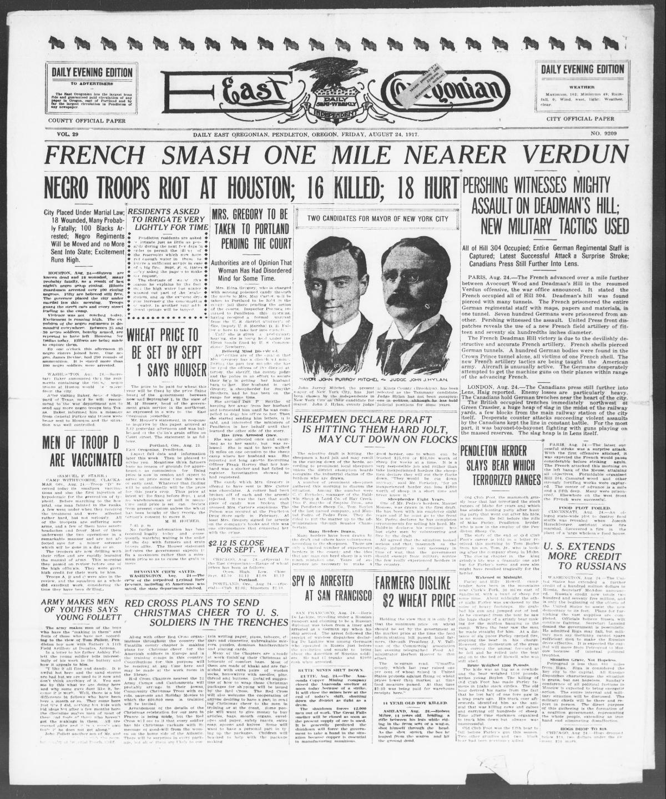
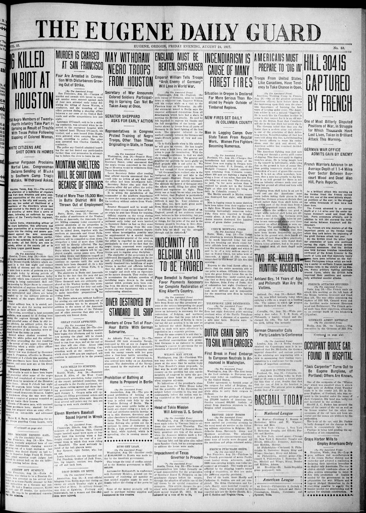
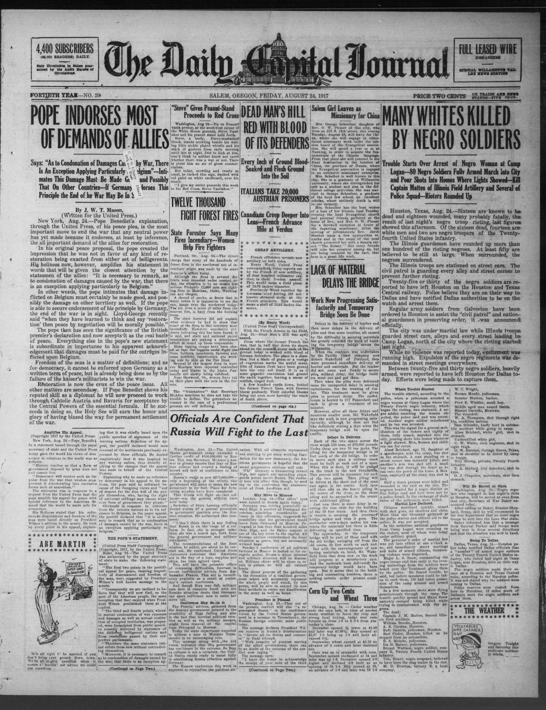
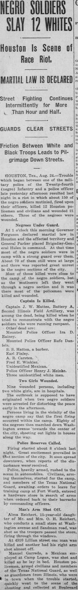
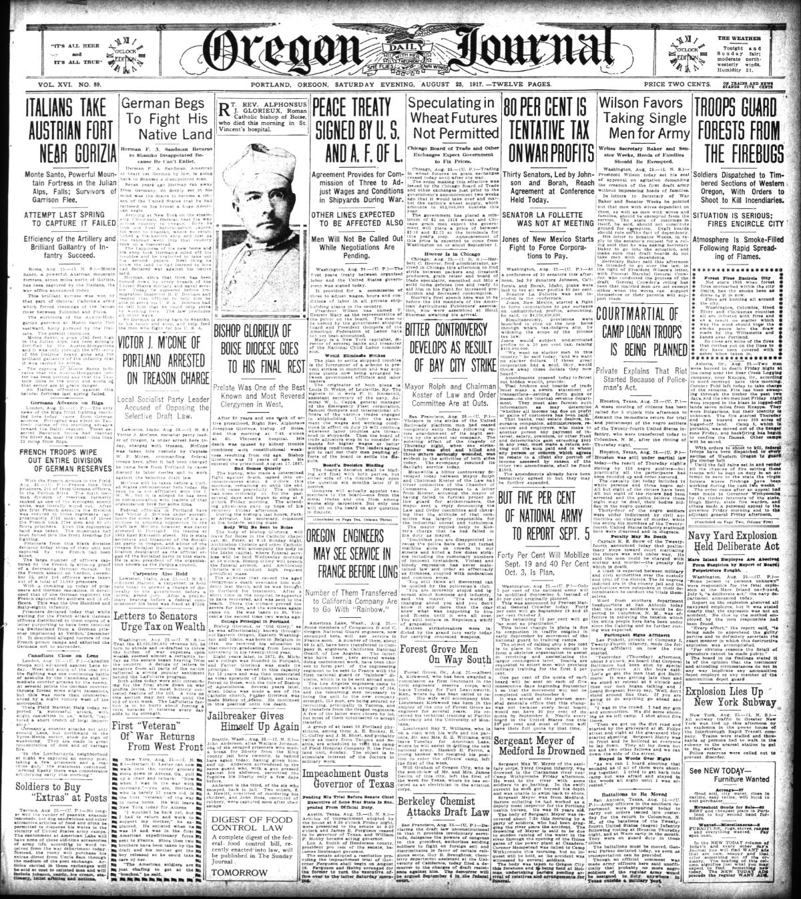

HN HN-406 · August 24, 1917 · War, Conflict & Security > Mutinies & Military Rebellions > Army revolts
Source: Hammond Times, p. 1 — original page; U.S. Army's 2023 case review.
Report: A United Press dispatch reported deadly clashes involving Black soldiers of the 24th Infantry and civilians in Houston, with the preliminary toll reaching 15. The language characterized the soldiers as rioters and gave relatively little space to preceding assaults and racial provocations.
Assessment: The Army's later review states 19 people died after troops faced months of racist abuse, including violent arrests of two Black soldiers. It found that subsequent trials were fundamentally unfair and in 2023 set aside the convictions of 110 soldiers. The first dispatch's framing is not a neutral finding on culpability.
Identity-review candidate peers: HN-408:Algorithmic
Authentic scans retrieved from Historic Oregon Newspapers (University of Oregon). Article crops are located using the archive's own OCR word coordinates and rendered at native crop resolution; page scans are reduced-size access renditions. No images were generated, mocked, or retouched.





Not yet acquired. Queued for provider-specific acquisition testing (see source-acquisition manifest).
URL (preserved verbatim): https://newspapers.library.in.gov/?a=d&d=LCT19170824.1.1
Saved research report: Historical_Newspaper_Event_Research_403-427_2026-10-23.md
Evidence note: A newspaper report means a historical publication made a claim; it does not establish that claim as fact. Contemporary reporting is separated from later scholarly context and our own assessment.